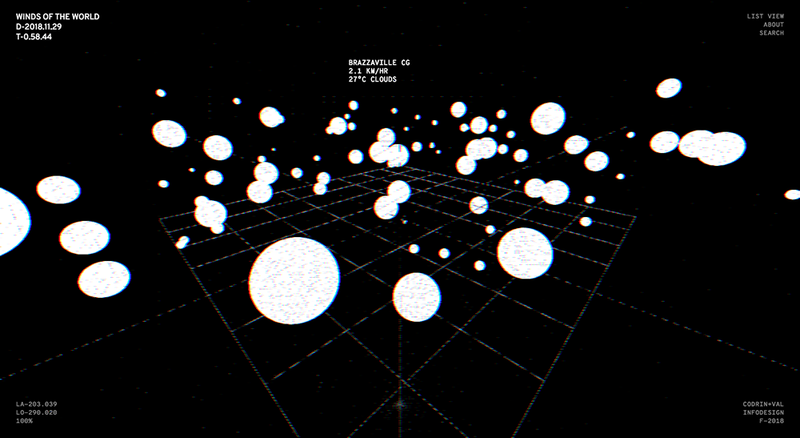
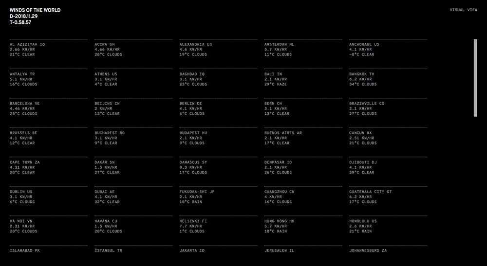
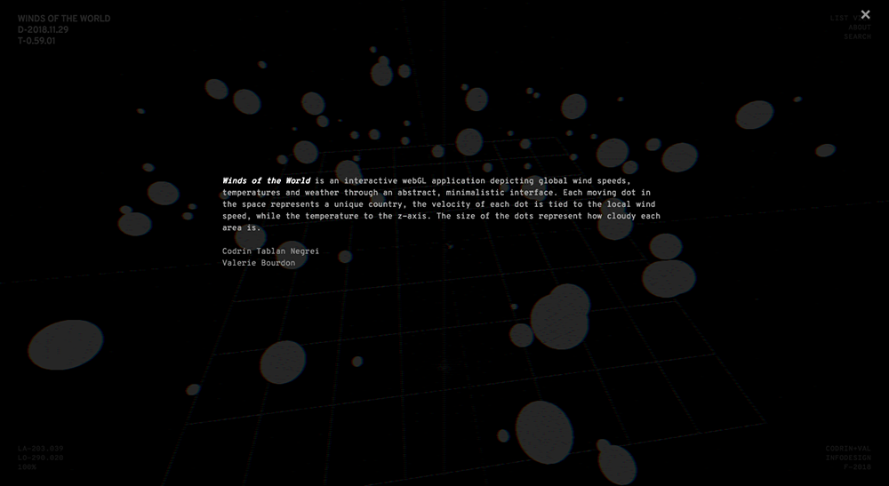
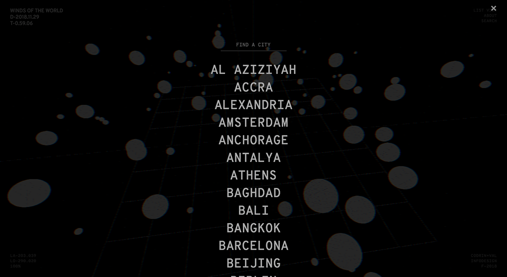
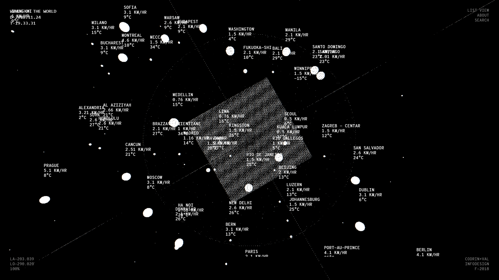
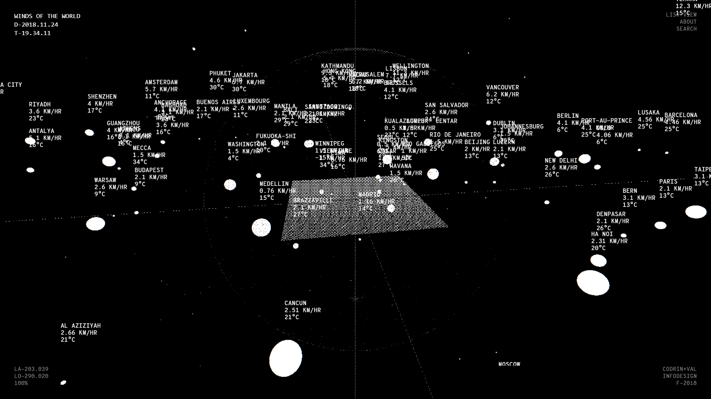
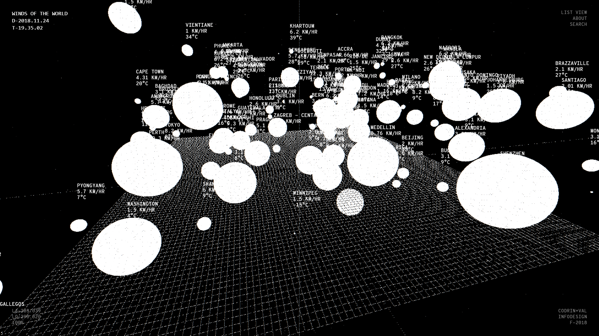

Winds of the World is an (in progress) interactive webGL application depicting global wind speeds, temperatures and weather through an abstract, minimalistic interface.
Valerie Bourdon: Front end/back end design, HTML/CSS
Codrin Tablan Negrei: Front end/back end design, Three.JS
App: Winds of the World
      